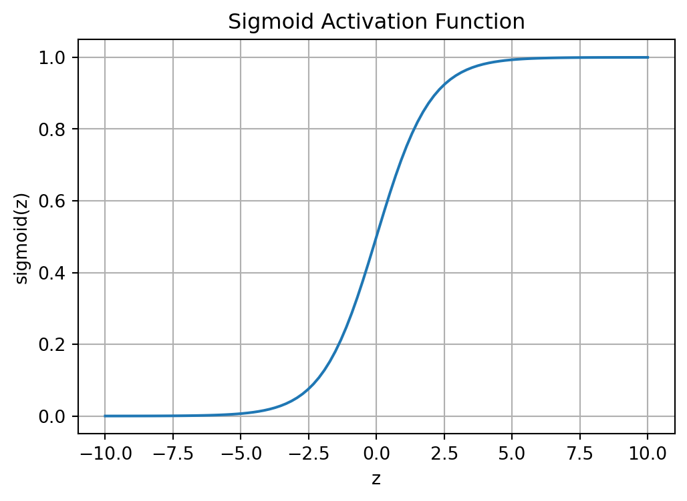
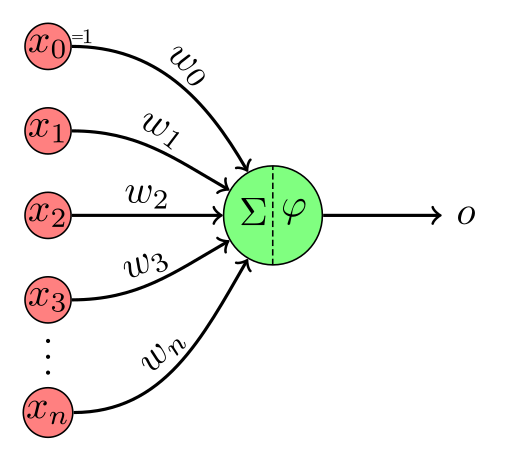
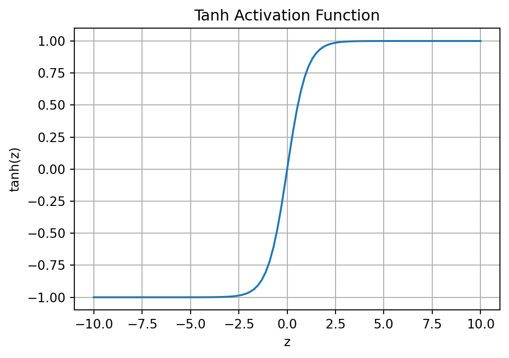
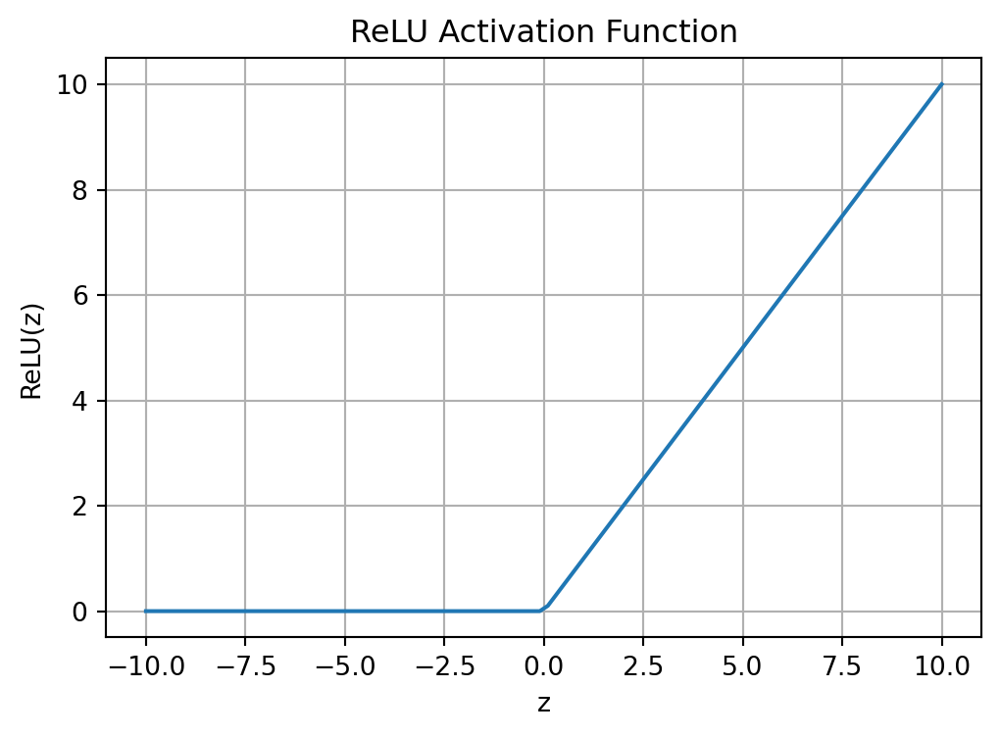
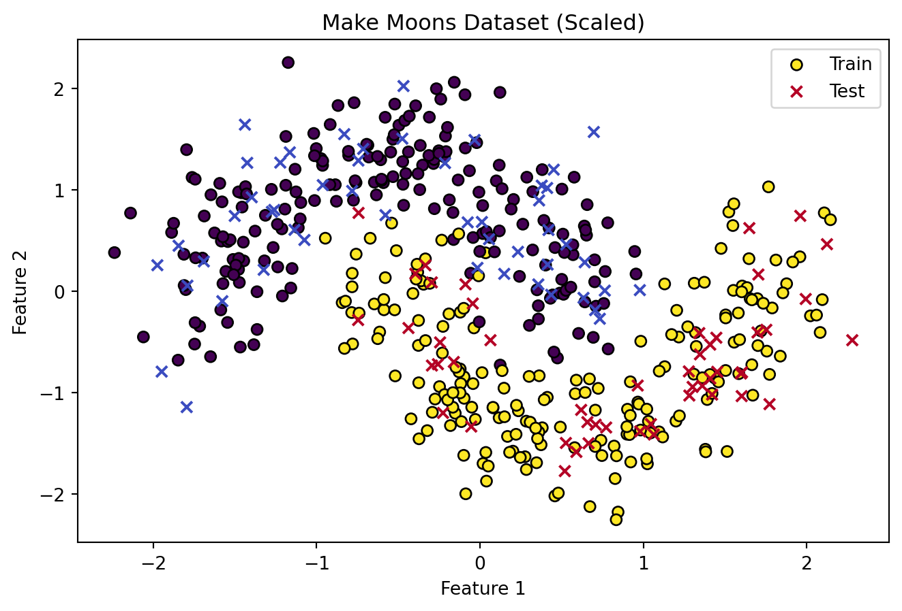
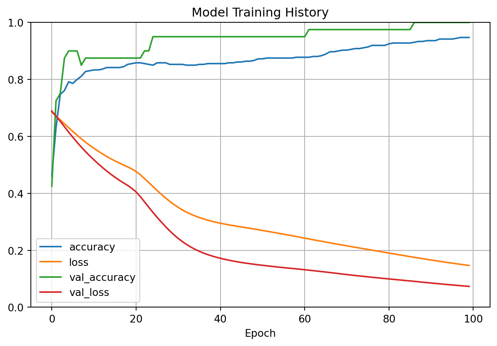
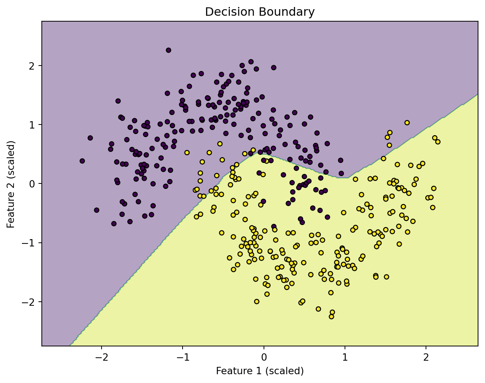

深度学习基础
学习目标
学习目标：
- 理解深度学习的基本概念及其与机器学习的关系。
- 了解人工神经网络 (ANN) 的基本构成：神经元、激活函数、层次结构。
- 掌握常见的激活函数（如 Sigmoid, ReLU, Tanh, Softmax）及其特点。
- 理解前向传播 (Forward Propagation) 和反向传播 (Backward Propagation) 的基本原理。
- 了解损失函数 (Loss Function) 在神经网络训练中的作用以及常见的损失函数（如均方误差、交叉熵）。
- 理解梯度下降 (Gradient Descent) 及其变种（如SGD, Adam）在优化神经网络中的应用。
- 能够使用 Keras/TensorFlow 构建、编译、训练和评估一个简单的全连接神经网络。
- 初步了解深度学习中的常见挑战，如过拟合、梯度消失/爆炸。
10.1 从机器学习到深度学习
在前面的章节中，我们学习了各种机器学习算法，它们在许多任务上都取得了显著的成功。然而，这些传统机器学习算法在处理复杂、高维度的数据（如图像、语音、自然语言）时，往往需要精心设计的特征工程。特征工程的好坏直接决定了模型的性能上限，但它本身既耗时又依赖领域知识。
深度学习 (Deep Learning, DL) 作为机器学习的一个分支，试图解决这个问题。深度学习的核心思想是通过构建深层次的神经网络模型，自动从原始数据中学习有用的特征表示。这些模型通常包含多个处理层，每一层都会对输入数据进行非线性变换，并逐步提取出更抽象、更高级别的特征。
与传统机器学习的关系：
- 深度学习是机器学习的一种方法。
- 传统机器学习算法通常是”浅层”的，而深度学习模型是”深层”的（通常指多个隐藏层）。
- 深度学习在图像识别、语音识别、自然语言处理等领域取得了突破性进展，主要是因为其强大的特征学习能力。
“深度”指的是网络中包含多个隐藏层。这些隐藏层使得模型能够学习到数据中从简单到复杂的层次化特征。例如，在图像识别中，浅层可能学习边缘和角点，中层可能学习物体的部件，而深层则可能学习到完整的物体概念。
下图直观地展示了浅层学习和深度学习在特征提取上的区别：

深度学习的优势：
- 自动特征学习：深度学习模型能够自动学习特征，减少对人工特征工程的依赖
- 层次化特征提取：通过多层网络结构，可以学习从简单到复杂的层次化特征表示
- 领域突破：在计算机视觉、语音识别、自然语言处理等领域实现了超越传统方法的性能
10.2 神经网络基础
人工神经网络 (Artificial Neural Network, ANN) 是深度学习的核心。其灵感来源于生物神经系统，但经过了高度简化和数学化。
10.2.1 神经元模型 (Perceptron)
最简单的神经网络单元是感知机 (Perceptron)，或者更一般地称为神经元 (Neuron)。一个神经元接收若干个输入，对这些输入进行加权求和，然后通过一个激活函数 (Activation Function) 处理后产生输出。

对于一个有 \(n\) 个输入的神经元：
- 输入：\(x_1, x_2, \dots, x_n\)
- 权重：\(w_1, w_2, \dots, w_n\)
- 偏置：\(w_0\) (通常记为 \(b\))
- 加权和 (Weighted Sum)： \(z = (w_1 x_1 + w_2 x_2 + \dots + w_n x_n) + b = \mathbf{w} \cdot \mathbf{x} + b\)
- 激活 (Activation)： \(a = \sigma(z)\)，其中 \(\sigma\) 是激活函数。
偏置项 \(b\) 的作用是允许激活函数在输入为零时也能被激活，或者调整激活的阈值。
10.2.2 激活函数 (Activation Functions)
激活函数为神经网络引入非线性，使得网络能够学习和表示更复杂的函数关系。如果沒有激活函数（或者激活函数是线性的），那么无论神经网络有多少层，其最终输出都只是输入特征的线性组合，等价于一个单层线性模型。
常见的激活函数包括：
10.2.2.1 Sigmoid (Logistic) 函数
\[ \sigma(z) = \frac{1}{1 + e^{-z}} \]
- 输出范围： (0, 1)
- 特点：
- 常用于二分类问题的输出层，可以将输出解释为概率。
- 在输入值很大或很小时，梯度趋近于0（梯度消失问题），可能导致训练缓慢。
- 输出不是以0为中心。
10.2.2.2 Tanh (双曲正切) 函数
\[ \text{tanh}(z) = \frac{e^z - e^{-z}}{e^z + e^{-z}} = 2 \cdot \text{sigmoid}(2z) - 1 \]
- 输出范围： (-1, 1)
- 特点：
- 输出以0为中心，通常比Sigmoid函数在隐藏层中表现更好。
- 仍然存在梯度消失问题。

10.2.2.3 ReLU (Rectified Linear Unit, 修正线性单元)
\[ \text{ReLU}(z) = \max(0, z) \]
- 输出范围： \([0, \infty)\)
- 特点：
- 目前在深度学习中非常流行，特别是在隐藏层。
- 计算简单高效。
- 在正区域梯度恒为1，有助于缓解梯度消失问题。
- Dying ReLU 问题： 如果输入恒为负，神经元将不再被激活，梯度为0，参数无法更新。
- 输出不是以0为中心。

ReLU的变种：
- Leaky ReLU: \(f(z) = \max(\alpha z, z)\)，其中 \(\alpha\) 是一个小的正常数（如0.01）。允许负输入有一个小的非零梯度，以解决Dying ReLU问题。
- Parametric ReLU (PReLU): \(\alpha\) 作为一个可学习的参数。
- Exponential Linear Unit (ELU): 结合了ReLU和Sigmoid/Tanh的优点。
10.2.2.4 Softmax 函数
Softmax 通常用于多分类问题的输出层。它将一个包含 \(K\) 个实数的向量转换为一个 \(K\) 维的概率分布向量，其中每个元素表示对应类别的概率，且所有元素之和为1。 对于输入向量 \(\mathbf{z} = (z_1, z_2, \dots, z_K)\)，Softmax的输出为： \[ \text{softmax}(\mathbf{z})_i = \frac{e^{z_i}}{\sum_{j=1}^{K} e^{z_j}} \quad \text{for } i = 1, \dots, K \]
- 输出范围： 每个元素在 (0, 1) 之间，所有元素之和为1。
- 特点： 非常适合表示多分类问题的概率输出。
10.2.3 神经网络的结构
一个典型的全连接神经网络 (Fully Connected Neural Network) 或多层感知机 (Multilayer Perceptron, MLP) 由以下几部分组成：
- 输入层 (Input Layer)： 接收原始数据（特征）。输入层神经元的数量通常等于输入数据的特征数量。它不进行计算，只是将数据传递给第一隐藏层。
- 隐藏层 (Hidden Layer(s))： 位于输入层和输出层之间。这些层执行大部分计算，学习数据的复杂模式和表示。一个神经网络可以有一个或多个隐藏层。深度学习模型通常有多个隐藏层。
- 输出层 (Output Layer)： 产生最终的预测结果。输出层神经元的数量和激活函数的选择取决于具体任务：
- 二分类： 通常一个神经元，使用Sigmoid激活函数。
- 多分类 (K个类别)： 通常K个神经元，使用Softmax激活函数。
- 回归： 通常一个或多个神经元（取决于预测多少个值），通常不使用激活函数或使用线性激活函数。

在一个全连接网络中，每一层的每个神经元都与前一层的所有神经元相连接。
10.3 前向传播与反向传播
神经网络的训练过程主要包括两个阶段：前向传播和反向传播。
10.3.1 前向传播 (Forward Propagation)
前向传播是指数据从输入层开始，逐层通过隐藏层，最终到达输出层并产生预测值的过程。
对于网络中的每一层 \(l\)： \[ \mathbf{z}^{[l]} = \mathbf{W}^{[l]} \mathbf{a}^{[l-1]} + \mathbf{b}^{[l]} \] \[ \mathbf{a}^{[l]} = \sigma^{[l]}(\mathbf{z}^{[l]}) \] 其中：
- \(\mathbf{a}^{[l-1]}\) 是第 \(l-1\) 层的激活输出（对于第一层，\(l=1\)，\(\mathbf{a}^{[0]}\) 就是输入数据 \(\mathbf{x}\)）。
- \(\mathbf{W}^{[l]}\) 和 \(\mathbf{b}^{[l]}\) 分别是第 \(l\) 层的权重矩阵和偏置向量。
- \(\sigma^{[l]}\) 是第 \(l\) 层的激活函数。
- \(\mathbf{a}^{[l]}\) 是第 \(l\) 层的激活输出。
这个过程一直持续到输出层，得到最终的预测值 \(\hat{\mathbf{y}} = \mathbf{a}^{[L]}\) (假设有L层)。
10.3.2 损失函数 (Loss Function)
在得到预测值 \(\hat{\mathbf{y}}\) 后，我们需要一个损失函数 (Loss Function) 或成本函数 (Cost Function) 来衡量预测值与真实标签 \(\mathbf{y}\) 之间的差异。损失函数的值越小，表示模型的预测越准确。
常见的损失函数：
均方误差 (Mean Squared Error, MSE)： 常用于回归问题。 \[ L(\mathbf{y}, \hat{\mathbf{y}}) = \frac{1}{m} \sum_{i=1}^{m} (y_i - \hat{y}_i)^2 \] (对于 \(m\) 个样本的批量，或者单个样本时 \(m=1\))
交叉熵损失 (Cross-Entropy Loss)： 常用于分类问题。
- 二分类交叉熵 (Binary Cross-Entropy)： (单个样本) \[ L(y, \hat{y}) = -[y \log(\hat{y}) + (1-y) \log(1-\hat{y})] \] 其中 \(y \in \{0, 1\}\) 是真实标签，\(\hat{y} \in (0, 1)\) 是模型预测为类别1的概率。
- 分类交叉熵 (Categorical Cross-Entropy)： (单个样本，K个类别，使用one-hot编码的真实标签) \[ L(\mathbf{y}, \hat{\mathbf{y}}) = - \sum_{k=1}^{K} y_k \log(\hat{y}_k) \] 其中 \(y_k\) 是真实标签的第k个元素 (0或1)，\(\hat{y}_k\) 是模型预测为类别k的概率。
10.3.3 反向传播 (Backward Propagation) 与梯度下降
神经网络训练的目标是找到一组权重 \(\mathbf{W}\) 和偏置 \(\mathbf{b}\)，使得损失函数 \(L\) 最小化。这通常通过梯度下降 (Gradient Descent) 算法及其变种来实现。
- 计算梯度： 为了使用梯度下降，我们需要计算损失函数 \(L\) 关于每个权重 \(w_{ij}^{[l]}\) 和偏置 \(b_i^{[l]}\) 的偏导数（梯度）。 \[ \frac{\partial L}{\partial w_{ij}^{[l]}}, \quad \frac{\partial L}{\partial b_i^{[l]}} \] 反向传播 (Backpropagation) 算法是一种高效计算这些梯度的方法，由David Rumelhart、Geoffrey Hinton和Ronald Williams在1986年提出，其核心思想后来为深度学习的发展奠定了基础。该算法利用微积分中的链式法则，从输出层开始，逐层向后计算梯度，直到输入层。
2024年诺贝尔物理学奖与神经网络：
2024年，诺贝尔物理学奖授予了美国普林斯顿大学的约翰·霍普菲尔德(John Hopfield)和加拿大多伦多大学的杰弗里·欣顿(Geoffrey Hinton)，以表彰他们在神经网络和深度学习领域的开创性贡献。这标志着深度学习理论在物理学界的重要地位获得认可。
霍普菲尔德以其提出的霍普菲尔德网络(Hopfield Network)而闻名，这是一种全连接的循环神经网络，为现代神经网络和记忆模型奠定了基础。欣顿则被称为”深度学习教父”，他在反向传播算法、受限玻尔兹曼机(RBM)和深度信念网络等方面做出了里程碑式的工作。
有趣的是，欣顿此前已获得2018年图灵奖(计算机领域的”诺贝尔奖”)，成为少数同时获得诺贝尔奖和图灵奖的科学家之一。这充分体现了神经网络研究在跨学科领域的重要价值。
- 参数更新： 计算得到梯度后，按照梯度的反方向更新参数： \[ w_{ij}^{[l]} \leftarrow w_{ij}^{[l]} - \eta \frac{\partial L}{\partial w_{ij}^{[l]}} \] \[ b_i^{[l]} \leftarrow b_i^{[l]} - \eta \frac{\partial L}{\partial b_i^{[l]}} \] 其中 \(\eta\) 是学习率 (Learning Rate)，它控制了每次更新的步长。
梯度下降的变种：
- 批量梯度下降 (Batch Gradient Descent)： 每次更新使用整个训练集的梯度。计算成本高，不适用于大数据集。
- 随机梯度下降 (Stochastic Gradient Descent, SGD)： 每次更新只使用训练集中的一个样本计算梯度。更新速度快，但梯度波动大。
- 小批量梯度下降 (Mini-batch Gradient Descent)： 每次更新使用一小批 (mini-batch) 样本计算梯度。这是实践中最常用的方法，平衡了计算效率和梯度稳定性。
优化器 (Optimizers)：
除了基本的SGD，还有许多更高级的优化算法可以改进梯度下降的性能，例如：
- Momentum: 引入动量项，加速梯度下降并减少震荡。
- AdaGrad (Adaptive Gradient): 为不同参数自适应地调整学习率。
- RMSprop (Root Mean Square Propagation): 也是自适应学习率的方法。
- Adam (Adaptive Moment Estimation): 结合了Momentum和RMSprop的优点，是目前非常流行和有效的优化器。
10.4 构建一个简单的神经网络 (使用 Keras/TensorFlow)
现在，我们将使用 Keras (一个高级神经网络API，通常与TensorFlow后端一起使用) 来构建一个简单的全连接神经网络，用于分类任务。
主流深度学习框架比较：
- TensorFlow/Keras：
- 谷歌开发，工业界应用广泛
- Keras作为高级API简化了模型构建
- 支持移动端和嵌入式部署(TFLite)
- 强大的可视化工具(TensorBoard)
- PyTorch：
- Facebook开发，学术研究首选
- 动态计算图(即时执行)更灵活
- 与Python生态无缝集成
- 丰富的计算机视觉库(torchvision)
- JAX：
- 谷歌开发，结合NumPy和自动微分
- 函数式编程范式
- 适合科研和高性能计算
- 正在快速发展的新兴框架
- MXNet：
- Apache开源项目
- 支持多语言接口
- 优秀的分布式训练支持
- 被AWS选为官方深度学习框架
- PaddlePaddle：
- 百度开发的国产框架
- 中文文档和社区支持好
- 针对中文NLP任务优化
- 政府和企业级应用广泛
选择建议：
- 工业部署： TensorFlow/Keras
- 学术研究： PyTorch
- 国产化需求： PaddlePaddle
- 高性能计算： JAX
我们将使用Scikit-learn内置的 make_moons 数据集，这是一个简单的二分类问题。
10.4.1 数据准备
import numpy as np
import matplotlib.pyplot as plt
from sklearn.datasets import make_moons
from sklearn.model_selection import train_test_split
from sklearn.preprocessing import StandardScaler
# 生成数据
X, y = make_moons(n_samples=500, noise=0.2, random_state=42)
# 划分训练集和测试集
X_train, X_test, y_train, y_test = train_test_split(X, y, test_size=0.2, random_state=42, stratify=y)
# 数据标准化
scaler = StandardScaler()
X_train_scaled = scaler.fit_transform(X_train)
X_test_scaled = scaler.transform(X_test)
# 可视化数据
plt.figure(figsize=(8,5))
plt.scatter(X_train_scaled[:, 0], X_train_scaled[:, 1], c=y_train, cmap='viridis', edgecolors='k', label='Train')
plt.scatter(X_test_scaled[:, 0], X_test_scaled[:, 1], c=y_test, cmap='coolwarm', marker='x', label='Test')
plt.title("Make Moons Dataset (Scaled)")
plt.xlabel("Feature 1")
plt.ylabel("Feature 2")
plt.legend()
# plt.savefig("images/10-deep-learning/make_moons.svg")
plt.show()
print(f"X_train shape: {X_train_scaled.shape}")
print(f"y_train shape: {y_train.shape}")
print(f"X_test shape: {X_test_scaled.shape}")
print(f"y_test shape: {y_test.shape}")
X_train shape: (400, 2)
y_train shape: (400,)
X_test shape: (100, 2)
y_test shape: (100,)10.4.2 模型定义 (使用 Keras Sequential API)
Keras 提供了多种构建模型的方式，最简单的是 Sequential API，它允许我们按顺序堆叠网络层。
import tensorflow as tf
from tensorflow import keras # tf.keras
# 设置随机种子以保证结果可复现
np.random.seed(42)
tf.random.set_seed(42)
# 定义模型
model = keras.models.Sequential([
keras.layers.Dense(units=10, activation='relu', input_shape=X_train_scaled.shape[1:]), # 第一个隐藏层，10个神经元，ReLU激活，需要指定输入形状
keras.layers.Dense(units=5, activation='relu'), # 第二个隐藏层，5个神经元，ReLU激活
keras.layers.Dense(units=1, activation='sigmoid') # 输出层，1个神经元，Sigmoid激活 (二分类)
])
# 打印模型概要
model.summary()Model: "sequential_3"
┏━━━━━━━━━━━━━━━━━━━━━━━━━━━━━━━━━┳━━━━━━━━━━━━━━━━━━━━━━━━┳━━━━━━━━━━━━━━━┓ ┃ Layer (type) ┃ Output Shape ┃ Param # ┃ ┡━━━━━━━━━━━━━━━━━━━━━━━━━━━━━━━━━╇━━━━━━━━━━━━━━━━━━━━━━━━╇━━━━━━━━━━━━━━━┩ │ dense_9 (Dense) │ (None, 10) │ 30 │ ├─────────────────────────────────┼────────────────────────┼───────────────┤ │ dense_10 (Dense) │ (None, 5) │ 55 │ ├─────────────────────────────────┼────────────────────────┼───────────────┤ │ dense_11 (Dense) │ (None, 1) │ 6 │ └─────────────────────────────────┴────────────────────────┴───────────────┘
Total params: 91 (364.00 B)
Trainable params: 91 (364.00 B)
Non-trainable params: 0 (0.00 B)
解释：
keras.layers.Dense: 创建一个全连接层。units: 该层神经元的数量。activation: 该层使用的激活函数。input_shape: 只在第一层需要指定，表示输入数据的形状 (不包括批量大小)。这里X_train_scaled.shape[1:]意味着我们取除了第一个维度（样本数）之外的形状，即特征数量。
10.4.3 模型编译
在训练模型之前，我们需要对其进行编译，这一步会配置模型的学习过程。
model.compile(
loss='binary_crossentropy', # 损失函数：二分类交叉熵
optimizer='adam', # 优化器：Adam
metrics=['accuracy'] # 评估指标：准确率
)解释：
loss: 指定损失函数。对于二分类问题，常用'binary_crossentropy'。optimizer: 指定优化算法。'adam'是一个不错的默认选择。也可以传递优化器实例，如keras.optimizers.Adam(learning_rate=0.001)。metrics: 训练和评估过程中要监控的指标列表。
10.4.4 模型训练
现在我们可以用训练数据来训练模型了。
# 训练模型
history = model.fit(
X_train_scaled, y_train,
epochs=100, # 训练轮数 (迭代整个训练集的次数)
batch_size=32, # 每批样本数量
validation_split=0.1, # 从训练数据中分出10%作为验证集
verbose=0 # verbose=1 显示进度条, verbose=0 静默, verbose=2 每轮一行
)
# `history` 对象包含了训练过程中的损失和指标值
import pandas as pd
pd.DataFrame(history.history).plot(figsize=(8, 5))
plt.grid(True)
plt.gca().set_ylim(0, 1) # 设置y轴范围
plt.title("Model Training History")
plt.xlabel("Epoch")
# plt.savefig("images/10-deep-learning/training_history.svg")
plt.show()
解释：
epochs: 模型将遍历整个训练数据的次数。batch_size: 在每次梯度更新中使用的样本数量。validation_split: 从训练数据中自动划分一部分作为验证集，用于在训练过程中监控模型在未见过数据上的性能。也可以直接提供validation_data=(X_val, y_val)。verbose: 控制日志输出的详细程度。
model.fit() 返回一个 History 对象，其中包含了训练过程中的损失值和指定的评估指标值，我们可以用它来绘制学习曲线。
10.4.5 模型评估
训练完成后，我们在测试集上评估模型的最终性能。
loss, accuracy = model.evaluate(X_test_scaled, y_test, verbose=0)
print(f"\n测试集损失 (Test Loss): {loss:.4f}")
print(f"测试集准确率 (Test Accuracy): {accuracy:.4f}")
# 进行预测
y_pred_proba = model.predict(X_test_scaled, verbose=0)
y_pred = (y_pred_proba > 0.5).astype("int32") # 将概率转换为类别标签 (0或1)
# 查看一些预测结果
print("\n部分预测结果 (概率, 预测类别, 真实类别):")
for i in range(10):
print(f"{y_pred_proba[i][0]:.4f}\t{y_pred[i][0]}\t{y_test[i]}")
测试集损失 (Test Loss): 0.1343
测试集准确率 (Test Accuracy): 0.9700
部分预测结果 (概率, 预测类别, 真实类别):
0.9856 1 1
0.0119 0 0
0.1585 0 0
0.9908 1 1
0.9615 1 1
0.9164 1 1
0.9631 1 1
0.1139 0 0
0.4994 0 0
0.6153 1 010.4.6 可视化决策边界 (可选)
对于二维数据，我们可以可视化模型的决策边界。
def plot_decision_boundary(model, X, y, scaler):
x_min, x_max = X[:, 0].min() - 0.5, X[:, 0].max() + 0.5
y_min, y_max = X[:, 1].min() - 0.5, X[:, 1].max() + 0.5
xx, yy = np.meshgrid(np.arange(x_min, x_max, 0.02),
np.arange(y_min, y_max, 0.02))
# 对网格点进行同样的缩放
grid_points = np.c_[xx.ravel(), yy.ravel()]
grid_points_scaled = scaler.transform(grid_points) # 使用之前fit好的scaler
Z = model.predict(grid_points_scaled, verbose=0)
Z = (Z > 0.5).astype(int).reshape(xx.shape)
plt.contourf(xx, yy, Z, alpha=0.4, cmap='viridis')
plt.scatter(X[:, 0], X[:, 1], c=y, s=20, edgecolor='k', cmap='viridis')
plt.title("Decision Boundary")
plt.xlabel("Feature 1 (scaled)")
plt.ylabel("Feature 2 (scaled)")
plt.figure(figsize=(8, 6))
plot_decision_boundary(model, X_train_scaled, y_train, scaler) # 在训练数据上绘制
# plt.savefig("images/10-deep-learning/decision_boundary.svg")
plt.show()

10.5 深度学习中的常见挑战
- 过拟合 (Overfitting)： 深度学习模型由于其复杂性，很容易在训练数据上过拟合。解决方法包括：
- 获取更多数据
- 数据增强
- 正则化 (L1, L2)
- Dropout
- 早停 (Early Stopping)
- 梯度消失/爆炸 (Vanishing/Exploding Gradients)： 在深层网络中，梯度在反向传播时可能会变得非常小（消失）或非常大（爆炸），导致训练困难。解决方法包括：
- 合适的权重初始化 (如 He, Xavier/Glorot 初始化)
- 使用ReLU及其变种激活函数
- 批量归一化 (Batch Normalization)
- 梯度裁剪 (Gradient Clipping)
- 残差连接 (Residual Connections, 例如在ResNet中)
- 计算资源需求： 训练大型深度学习模型通常需要大量的计算资源（GPU/TPU）和时间。
- 超参数调优： 深度学习模型有很多超参数（网络结构、学习率、批量大小等），调优它们可能非常耗时。
10.6 本章总结
本章我们初步探索了深度学习的世界：
- 从深度学习与传统机器学习的区别和联系入手，理解了深度学习的核心在于通过深层神经网络自动学习特征。
- 学习了神经网络的基本单元——神经元模型，以及赋予网络非线性能力的激活函数（Sigmoid, Tanh, ReLU, Softmax）。
- 了解了神经网络的典型结构：输入层、隐藏层和输出层。
- 掌握了神经网络训练的核心机制：前向传播计算预测，损失函数衡量误差，反向传播计算梯度，以及梯度下降（及其优化器如Adam）更新参数。
- 通过一个Keras实例，我们动手构建、编译、训练和评估了一个简单的全连接神经网络，并学会了可视化训练历史和决策边界。
- 最后，我们简要讨论了深度学习面临的一些常见挑战，如过拟合和梯度问题。
这仅仅是深度学习的冰山一角。接下来的章节，我们将学习更专门化、更强大的神经网络架构，如卷积神经网络 (CNN) 和循环神经网络 (RNN)。
10.7 思考与练习
10.7.1 基础概念回顾
- 深度学习与神经网络概览：
- 什么是深度学习？它与传统机器学习的主要区别是什么？
- 神经元模型包含哪些主要组成部分？
- 为什么激活函数在神经网络中是必需的？如果所有激活函数都是线性的，会发生什么？
- 激活函数与损失函数：
- 比较Sigmoid、ReLU和Softmax激活函数的特点和常见用途。
- 什么是损失函数？列举至少两种常用的损失函数及其适用场景。
- 训练与优化：
- 简述前向传播和反向传播在神经网络训练中的作用。
- 解释学习率在梯度下降中的作用。学习率过大或过小可能会导致什么问题？
- Adam优化器相比SGD有什么优势？
10.7.2 Keras实践与探索
项目目标： 动手实践，加深对Keras模型构建、训练、评估和超参数调整的理解。
任务步骤：
- 调整模型结构： 尝试修改上一节
make_moons示例中神经网络的结构（例如，改变隐藏层的数量、每层的神经元数量、使用不同的激活函数），观察其对训练过程和最终性能的影响。 - 比较优化器与学习率： 在模型编译时尝试使用不同的优化器（如
SGD,RMSprop）和不同的学习率，记录并比较实验结果。 - 挑战新数据集： 使用
sklearn.datasets.make_circles生成另一个非线性可分的数据集，并尝试用类似的神经网络进行分类。调整模型结构和超参数以获得最佳性能，并可视化决策边界。
10.7.3 深入思考与挑战
- ReLU的特性： ReLU激活函数为什么比Sigmoid或Tanh在深层网络中更受欢迎？它有什么潜在问题（例如Dying ReLU）？Leaky ReLU是如何尝试解决这个问题的？
- 输出层设计： 如果一个二分类模型的输出层使用Softmax激活函数（即两个输出神经元，分别代表两个类别的概率），其效果与使用Sigmoid激活函数（一个输出神经元，代表其中一个类别的概率）相比如何？对应的损失函数应该如何选择才能使两者等价或类似？
- 数据标准化的重要性： 详细解释为什么数据标准化/归一化在训练神经网络时通常是重要的步骤？它对梯度下降过程有何影响？
- (选做) 反向传播手动推导： 对于一个非常简单的网络（例如，一个输入特征 \(x\)，一个隐藏层含一个神经元（激活函数为Sigmoid，权重 \(w_1\)，偏置 \(b_1\)），一个输出神经元（激活函数为Sigmoid，权重 \(w_2\)，偏置 \(b_2\))，损失函数为均方误差 \(L = \frac{1}{2}(y - \hat{y})^2\)），尝试手动推导损失函数 \(L\) 关于每个权重 (\(w_1, w_2\)) 和偏置 (\(b_1, b_2\)) 的梯度。这能帮助你更深刻地理解反向传播的原理。
10.7.4 推荐阅读
- Chollet, F. (2021). Deep Learning with Python (2nd ed.). Manning Publications. - Keras作者撰写，非常适合入门和实践。
- Goodfellow, I., Bengio, Y., & Courville, A. (2016). Deep Learning. MIT Press. - 深度学习领域的经典教材，内容全面且深入。可在线阅读：https://www.deeplearningbook.org/
- Nielsen, M. A. (2015). Neural Networks and Deep Learning. Determination Press. - 一本优秀的免费在线书籍，用清晰易懂的方式讲解了神经网络和深度学习的核心概念。可在线阅读：http://neuralnetworksanddeeplearning.com/
- TensorFlow官方教程和Keras文档：
- TensorFlow Core Tutorials: https://www.tensorflow.org/tutorials
- Keras Guides: https://keras.io/guides/